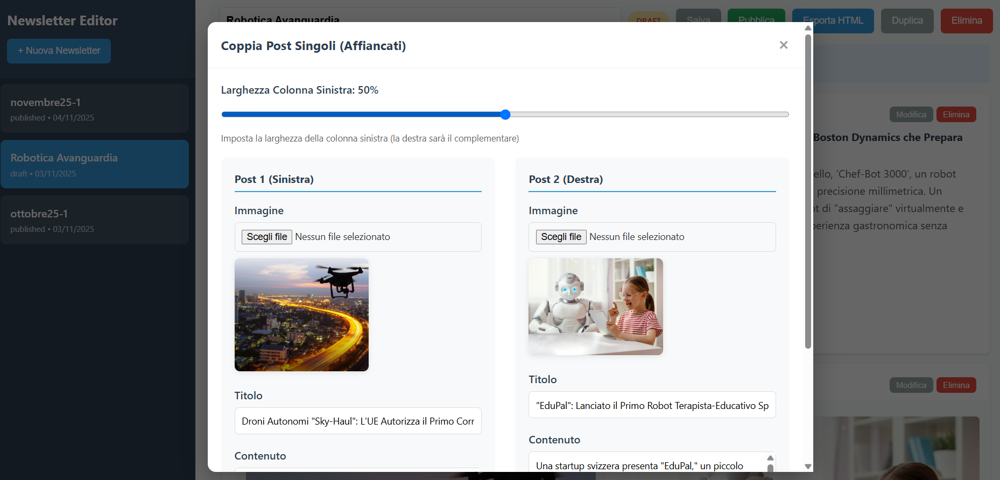

NEWSLETTER
Tool for making a newsletter with two kind of post (single and double column). The tool exports an HTML page with encoded images ready to be copied and pasted in a mail.

Project Overview
Sometimes you need to distribute a newsletter without excessive infrastructure, essentially creating an HTML page with a simple structure that can be replicated for different publications. This application, with a REST backend and an HTML + JS + CSS interface, allows you to manage a small database with the various editions of the newsletter containing different posts.
Newsletter Example
Here we see the posts table populated by the interface for a sample newsletter. The user selects the title, text, and images for each post, saving them to the database.

The resulting HTML page is generated, which can be distributed by pasting it into an email (the images are encoded within the page).